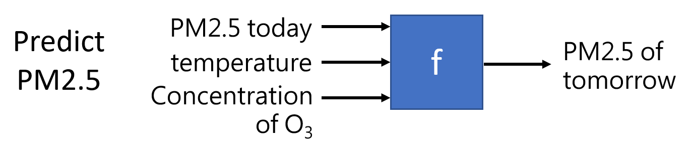
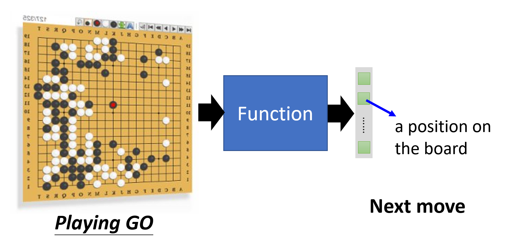
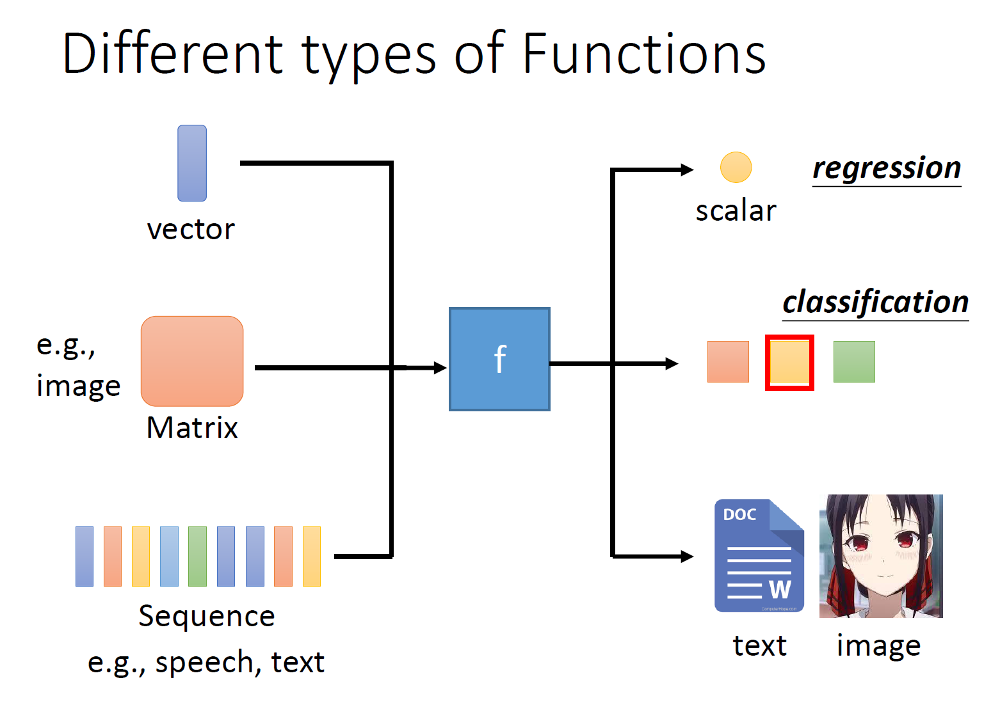
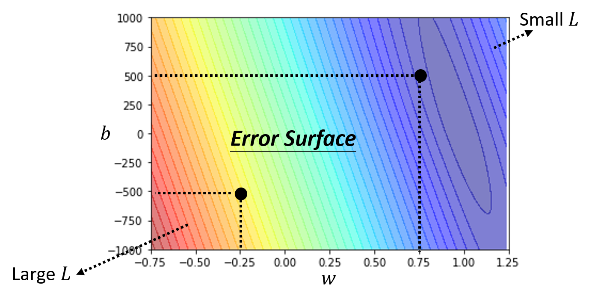
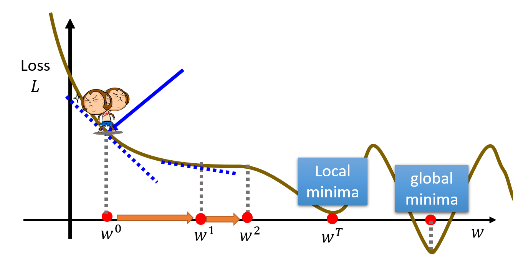
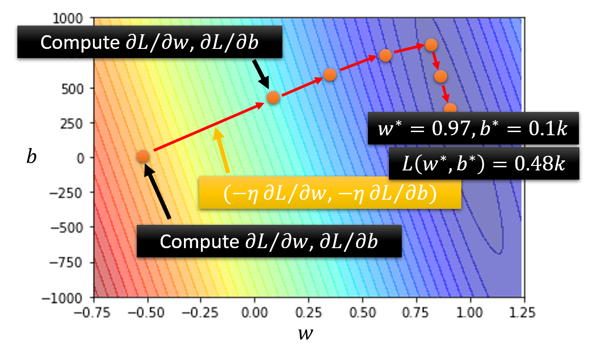
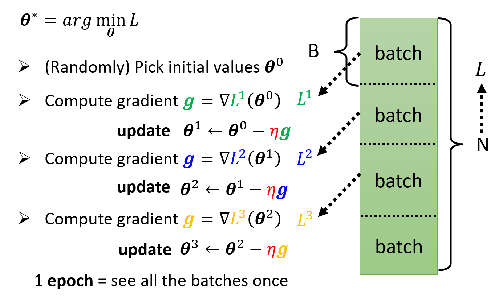
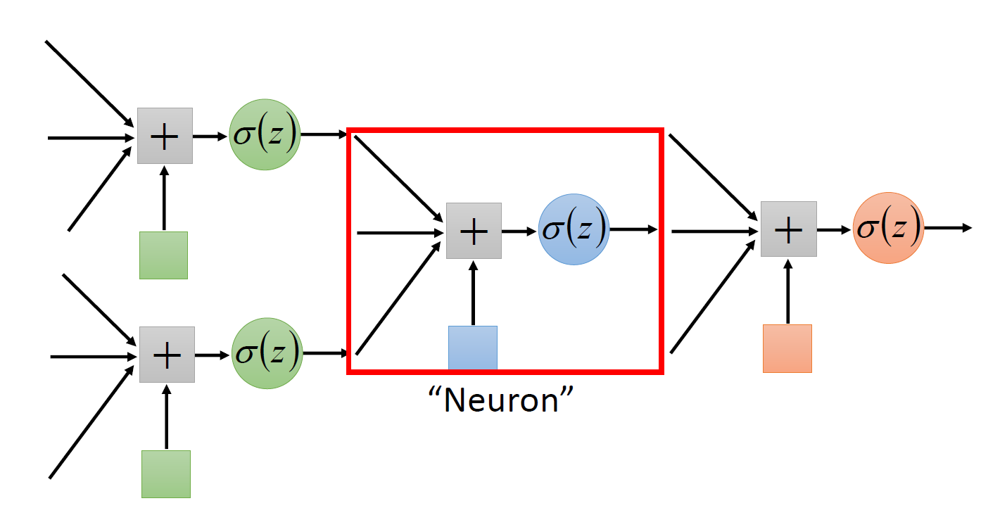
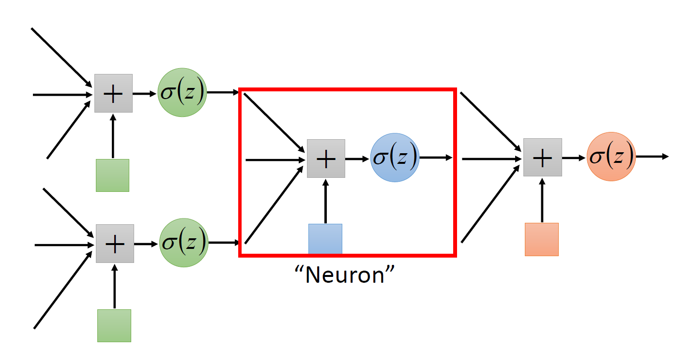

Lec 1: Intro to Machine Learning⚓︎
约 2854 个字 预计阅读时间 14 分钟
Machine Learning⚓︎
我们可以将机器学习简单理解为寻找一个函数，典型的函数类型有：
-
回归 (regression)：输出一个标量的函数
 -
分类 (classification)：给定一组选项（类 (classes)
） ，能够输出正确选项的函数 -
其他各种函数：

实际上，回归和分类只是机器学习的一小部分，它们的共同特点是输出量比较简单。对于更复杂，具有结构特征的输出，比如图像、文档等，我们把这种情况称为结构化学习 (structured learning)。
Training⚓︎
下面介绍机器学习的核心——寻找函数的步骤。实际上，实现这些步骤就是一个训练 (training) 的过程。
-
构造带有未知参数的函数
- 基于领域知识来构造函数，或者叫做模型 (model)
- 以一个简单的模型为例：\(y = b + wx_1\)，其中已知数据 \(x_1\) 称为特征点 (feature)，未知参数 \(w, b\) 分别称为权重 (weight) 和偏移 (bias)
-
从训练数据中定义损失
- 损失 (loss)：一个关于未知参数的函数，定义为 \(L(w, b)\)，用于衡量一组值的好坏
- 先假定一组 \(w, b\) 的值，代入已知数据 \(x_1\)，计算出预测值 \(y\)；并且记真实值为 \(\hat{y}\)（称为标签 (label)
） ，那么对应的误差为 \(e_1 = |y - \hat{y}|\)（绝对误差）- 也可以用平方差计算，即 \(e = (y - \hat{y})^2\)
-
假如有 \(n\) 个数据，那么可以获得 \(n\) 个误差，可以取它们的均值作为损失，即 \(L = \dfrac{1}{N} \sum\limits_N e_n\)（MAE）
- 如果求的是平方误差，那么得到的 \(L\) 是 MSE
- 也可以用其他方法计算损失
- 如果 \(y, \hat{y}\) 是按概率分布的，那么可以用交叉熵 (cross-entropy) 计算
-
对于不同的 \(b, w\)，我们可以得到不同的 \(L\) 值，因此我们可以根据计算得到的数据作出一张误差曲面 (error surface)：
用颜色表示 \(L\) 值，越红表示 \(L\) 越大，越紫表示 \(L\) 越小
-
优化 (optimization)
- 我们的目标是找到一组 \(w^*, b^*\)，使得 \(L\) 最小，即 \(w^*, b^* = arg \min\limits_{w, b} L\)
-
常用方法是梯度下降法 (gradient descent)
-
如果只考虑权重 \(w\) 和损失 \(L\)（二维
） ：- 先（随机）挑选初始值 \(w_0\)
- 计算 \(\dfrac{\partial L}{\partial w} \Big|_{w = w^0}\)（即 \(w^0\) 对应点的斜率）
- 若计算结果为负（下降
） ，则增大 \(w\)（向右走） ，否则的话（上升）减小 \(w\)（向左走） - 规定移动步幅为 \(\eta \dfrac{\partial L}{\partial w} \Big|_{w = w^0}\)（如下图橙色箭头所示
） 。其中 \(\eta\) 为学习速率 (learning rate)，它是一个超参数 (hyperparameter)，即事先人为给定的参数。那么下一个权重为 \(w^1 \leftarrow w^0 - \eta \dfrac{\partial L}{\partial w} \Big|_{w = w^0}\) - 重复除第一步外的所有步骤（迭代
） ，直到- 找到最小值，可能是全局最小值 (global minima)，也可能是局部最小值 (local minima)。前者是我们预期的结果，而后者并不是我们想要的，但是梯度下降法误以为这就是最小值（受算法设计和数据特征的影响）
- 实际上，局部最小值并不一定是问题所在（
？ ）
- 实际上，局部最小值并不一定是问题所在（
- 超出规定的迭代次数
- 找到最小值，可能是全局最小值 (global minima)，也可能是局部最小值 (local minima)。前者是我们预期的结果，而后者并不是我们想要的，但是梯度下降法误以为这就是最小值（受算法设计和数据特征的影响）
 -
再算上偏移 \(b\) 的话（三维
） ：- （随机）挑选初始值 \(w^0, b^0\)
- 计算 \(\dfrac{\partial L}{\partial w} \Big|_{w = w^0, b = b^0}\) 和 \(\dfrac{\partial L}{\partial b} \Big|_{w = w^0, b = b^0}\)（不用手算，大部分的深度学习框架都可以用一行语句算出来的）
- 迭代更新 \(w, b\)：\(w^1 \leftarrow w^0 - \eta \dfrac{\partial L}{\partial w} \Big|_{w = w^0, b = b^0}, b^1 \leftarrow b^0 - \eta \dfrac{\partial L}{\partial b} \Big|_{w = w^0, b = b^0}\)

-
Activation Functions⚓︎
除了 \(y = b + wx_1\) 这一模型外，我们还可以构造更为复杂的模型，以减小损失，比如 \(y = b + \sum\limits_{j=1}^7 w_j x_j, y = b + \sum\limits_{j=1}^{28} w_j x_j\) 等等。实验表明，当累加的项数越多时，损失往往会更小，也就是说训练效果会更好；但项数多到一定程度后，提升效果就不太明显了。本质上，上述的这些模型都可以归类为线性模型 (linear models)，这是一类最简单的模型。
Sigmoid⚓︎
由于过于简单，线性模型存在很严重的局限性（称为模型偏移 (model bias)
可以看到，第 1 条 Z 字形折线的腰部与红色折线的第 1 段平行，以此类推，我们用 3 条折线复原了这条红色曲线的 3 段折线部分。随后我们可以通过上下平移这些 Z 字形折线，或者通过增加一个常量（水平线，图上为第 0 条线）来修正，最终可以完美复原这条红色折线。
不难想到，这种方法适用于所有的直直的折线。实际上，对于任意的曲线，该方法也照样使用：只要在曲线上选取足够多的点，用线段连接相邻点，这样就可以用折线来近似表示原曲线，然后每个折线段可以用一个 Z 字形折线拟合，最终可以做到用多条 Z 字形折线之和 + 常量来表示任意曲线（如下图所示
现在来看我们如何用一个函数来表示这条 Z 字形折线呢？实际上，这条折线来自于 S 型函数 (sigmoid function)：\(y = c \dfrac{1}{1 + e^{-(b + wx_1)}} = c\ sigmoid(b + wx_1)\)，函数图像如下所示：
而 Z 字形折线是它的一种变体，称为硬 S 型 (hard sigmoid)，可以通过选择合适的参数（\(c, b, w\)）得到。下面来看调整不同参数会得到什么样的效果：
所以，对于任意的曲线（函数
上述式子仅针对最简单的线性模型。对于更一般的线性模型 \(y = b + \sum\limits_{j=1} w_j x_j\)，它的线性组合为：
其中 \(i, j\) 分别表示 sigmoid 函数和特征点的序号。下面我们用图形化的语言表示上述计算过程：
这里用 \(r_i\) 表示第 \(i\) 个 sigmoid 函数接受的参数（线性模型
令 \(a_i = sigmoid(r_i)\)，继续计算，直到算出 \(y\)。完整的计算过程如下图所示：
事实上，计算 \(y\) 的全过程都可以转化为矩阵的乘法和加法。对上式进一步化简，最终得到：
注
上面的式子中出现了两个 \(b\)，但意义不同：
- 灰色的 \(b\) 是一个常量
- 绿色的 \(b\) 是每个 sigmoid 函数下线性模型的偏移量（矩阵）
ReLU⚓︎
除了 sigmoid 函数外，还有一类在机器学习中常见的，且与 sigmoid 十分相似的函数：ReLU（rectified linear unit，整流线性单元
可以看到，它的形状就是硬 sigmoid 函数去掉其中的顶边或底边；它也接收相同的参数，但是它的函数形式更为简单，就是一个 max 函数。
现在，我们用 ReLU 来表示任意的线性模型：
与 sigmoid 的等价形式相比，除了将 sigmoid 换成 max 外，另一处区别在于累加和的项数扩大了一倍，这是因为 2 个 ReLU 才能转化为 1 个 sigmoid，这一点是显而易见的。
在机器学习中，我们将 sigmoid 和 RELU 称为激活函数 (activation functions)。
实践效果上看，ReLU 的效果更好，原因将在后面的章节中阐述。
More General Framework⚓︎
回到前面的机器学习三步框架：
-
上面算出的 \(y\) 就是第一步中带未知参数的函数；除了 \(x, y\) 外，其余部分都是未知参数。将这些未知参数放在一起，构成一个 \(N \times 1\) 的矩阵，即一个 \(N\) 维向量 \(\bm{\theta} = \begin{bmatrix}\theta_1 \\ \theta_2 \\ \theta_3 \\ \vdots \end{bmatrix}\)

-
现在这个模型的损失是一个关于参数 \(\bm{\theta}\) 的函数，但具体计算误差和损失的过程其实没有太大的变化：\(e = |y - \hat{y}|, L = \dfrac{1}{N} \sum\limits_n e_n\)
-
在“优化”这步中，我们要求 \(\bm{\theta^*} = arg\ \min\limits_{\bm{\theta}} L\)，具体步骤还是类似的：
- （随机）挑选初始值 \(\bm{\theta^0}\)
- 计算梯度 \(\bm{g} = \nabla L(\bm{\theta^0}) \begin{bmatrix}\dfrac{\partial L}{\partial \theta_1} \Big|_{\bm{\theta} = \bm{\theta^0}} \\ \dfrac{\partial L}{\partial \theta_2} \Big|_{\bm{\theta} = \bm{\theta^0}} \\ \vdots \end{bmatrix}\)
- 迭代更新 \(\bm{\theta}\)：\(\bm{\theta_1} \leftarrow \bm{\theta^0} - \eta \bm{g}\)，\(\dots\)
-
但实践过程中，我们不会一下子处理这么多的参数，而是将这些参数分批 (batch) 处理，因此上面的优化过程可以改写为：
如果所有的参数都按批用于更新梯度一次后，那么我们称之为 1 个时期 (epoch)。对于每个时期，每批数据都会被随机打乱 (shuffle)。
Deep Learning⚓︎
通过上述的训练过程，找到合适的参数后，便可以通过模型得到一组较为准确的一组预测值 \(\bm{a}\)（向量
 

在机器学习中，我们通常为上图的计算过程赋予这些名称：
- 神经元 (neuron)：包括输入（通过权重和偏移对一组数据求和
） 、激活函数和输出- 网络参数 (network parameter)\(\theta\)：神经元的所有权重和偏移
- 神经网络 (neural network)：由众多这样的神经元构成的集体，类似一张网（模拟人类的大脑）
- 层 (layer)：相当于一次训练的过程
- 输入层 (input layer)：初始输入的数据集
- 隐藏层 (hidden layer)：中间的一排神经元
- 输出层 (output layer)：最后一层神经元，得到训练结果
多次训练意味着有多层的神经元，看起来就很“深”，因此称之为深度学习 (deep learning)。
（有些过时的）例子
根据实际经验，随着层数的加深，训练结果的质量会不断提升，但也不是始终能够提升——到达一定层数后，虽然对于训练数据的预测更准确，但是对未来的预测结果的质量反而会下降，这种情况称为过拟合 (overfitting)。因此，我们不会让层数一直深下去的，合适的层数需要通过直觉 (intuition) 和不断的试错 (trial and error) 得到。
评论区